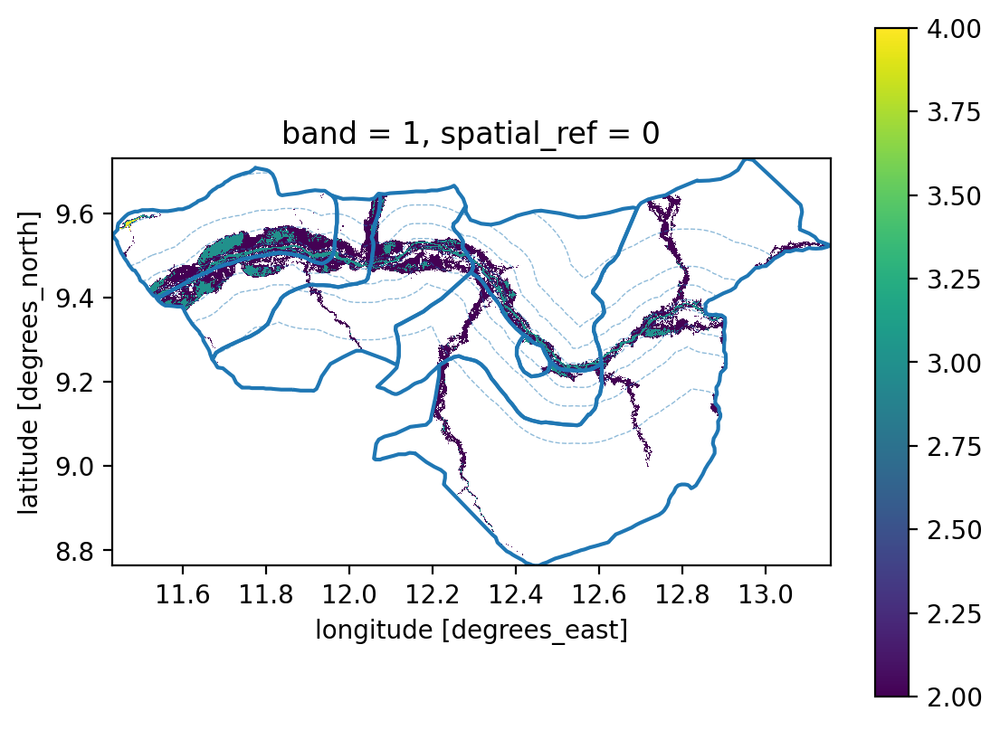
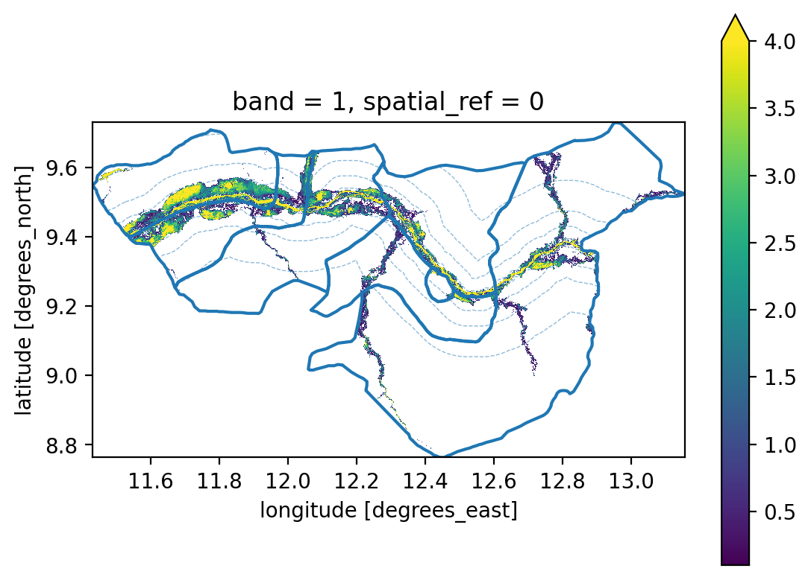
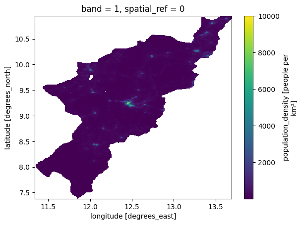
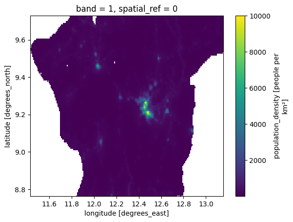
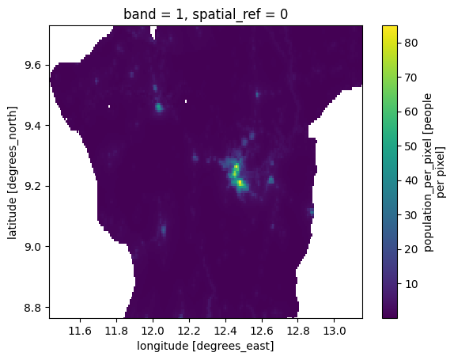
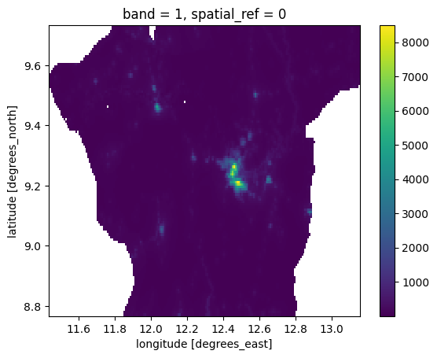
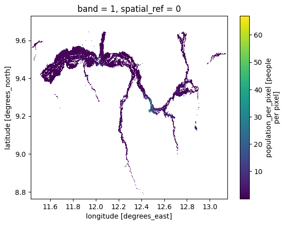
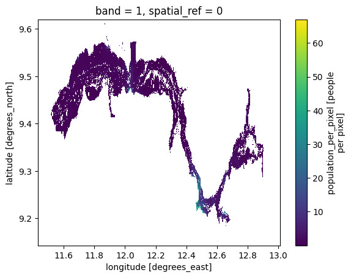
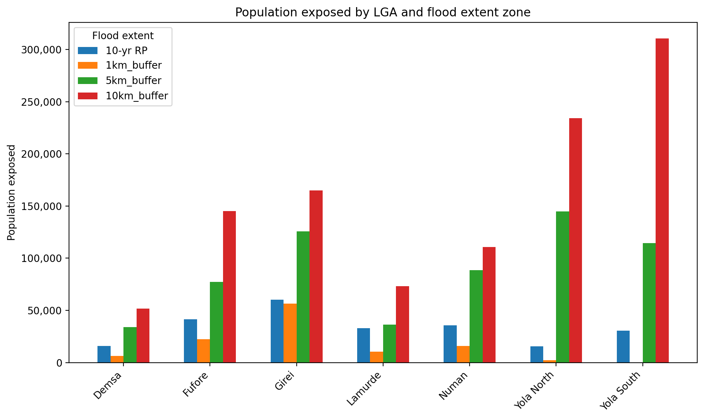
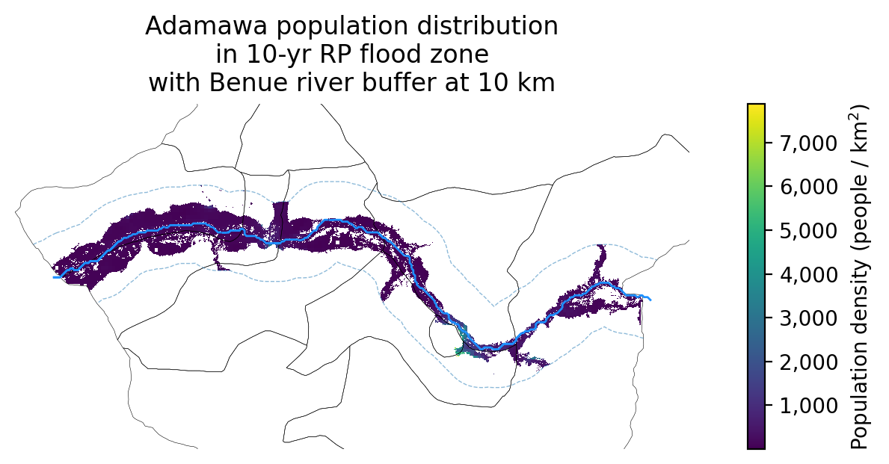

Code
%load_ext jupyter_black
%load_ext autoreload
%autoreload 2Calculating population in flood risk zones (from JRC)
%load_ext jupyter_black
%load_ext autoreload
%autoreload 2import ocha_stratus as stratus
import numpy as np
import matplotlib.pyplot as plt
import matplotlib.ticker as mticker
import geopandas as gpd
import pandas as pd
from rioxarray.exceptions import NoDataInBounds
from dask.diagnostics import ProgressBar
from src.datasources import codab, hydrosheds, worldpop
from src.constants import *
from src.utils.raster import (
compute_density_from_grid,
compute_pop_from_density,
)gdf_benue = hydrosheds.load_benue_aoi()adm2 = codab.load_codab_from_blob(admin_level=2, aoi_only=True)
adm2 = adm2[adm2["ADM1_PCODE"] == ADAMAWA]
adm2_aoi = adm2[adm2["ADM2_PCODE"].isin(BENUE_ADM2_PCODES)]da_wp = worldpop.load_raw_worldpop()
da_wp.attrs["_FillValue"] = np.nanda_wp_adm = da_wp.rio.clip(adm2.geometry)blob_name = f"{PROJECT_PREFIX}/processed/jrc-floodhazard/ID125_N10_E10_RP10_depth_reclass.tif"
da_reclass = stratus.open_blob_cog(blob_name)blob_name = (
f"{PROJECT_PREFIX}/processed/jrc-floodhazard/ID125_N10_E10_RP10_depth.tif"
)
da_depth = stratus.open_blob_cog(blob_name)da_depth_aoi = da_depth.rio.clip(adm2_aoi.geometry)da_reclass_aoi = da_reclass.rio.clip(adm2_aoi.geometry)with ProgressBar():
da_reclass_aoi_computed = da_reclass_aoi.compute()[########################################] | 100% Completed | 1.26 smswith ProgressBar():
da_depth_aoi_computed = da_depth_aoi.compute()[########################################] | 100% Completed | 1.05 smsfig, ax = plt.subplots(dpi=200)
da_reclass_aoi_computed.where(da_reclass_aoi_computed > 0).plot(ax=ax)
adm2_aoi.boundary.plot(ax=ax)
adm2_union = adm2_aoi.union_all()
for buffer_km in [1, 5, 10, 20]:
buffer_geom = gdf_benue.to_crs(3857).buffer(buffer_km * 1000).union_all()
buffer_geom = (
gpd.GeoSeries([buffer_geom], crs=3857).to_crs(4326).union_all()
)
buffer_boundary = buffer_geom.boundary
clipped_boundary = buffer_boundary.intersection(adm2_union)
if not clipped_boundary.is_empty:
gpd.GeoSeries([clipped_boundary], crs=4326).plot(
ax=ax, linewidth=0.5, linestyle="--", alpha=0.5
)
fig, ax = plt.subplots(dpi=200)
da_depth_aoi_computed.where(da_depth_aoi_computed > 0).plot(ax=ax, vmax=4)
adm2_aoi.boundary.plot(ax=ax)
adm2_union = adm2_aoi.union_all()
for buffer_km in [1, 5, 10, 20]:
buffer_geom = gdf_benue.to_crs(3857).buffer(buffer_km * 1000).union_all()
buffer_geom = (
gpd.GeoSeries([buffer_geom], crs=3857).to_crs(4326).union_all()
)
buffer_boundary = buffer_geom.boundary
clipped_boundary = buffer_boundary.intersection(adm2_union)
if not clipped_boundary.is_empty:
gpd.GeoSeries([clipped_boundary], crs=4326).plot(
ax=ax, linewidth=0.5, linestyle="--", alpha=0.5
)
da_density = compute_density_from_grid(da_wp_adm, lat_name="y", lon_name="x")da_density_interp = da_density.interp_like(da_reclass_aoi_computed)/Users/tdowning/.pyenv/versions/ds-aa-nga-flooding/lib/python3.11/site-packages/scipy/interpolate/_interpolate.py:710: RuntimeWarning: invalid value encountered in divide
slope = (y_hi - y_lo) / (x_hi - x_lo)[:, None]da_density.plot()
da_density_interp = da_density.rio.reproject_match(da_reclass_aoi_computed)da_density_interp.plot()
da_pop_interp = compute_pop_from_density(
da_density_interp, lat_name="y", lon_name="x"
)da_pop_interp.plot()
da_pop_interp.sum()<xarray.DataArray 'population_per_pixel' ()> Size: 8B
array(1967037.96018411)
Coordinates:
spatial_ref int64 8B 0da_wp_test = da_wp_adm.sel(
x=slice(da_pop_interp["x"].min(), da_pop_interp["x"].max()),
y=slice(da_pop_interp["y"].max(), da_pop_interp["y"].min()),
)da_wp_test.plot()
da_wp_test.sum()<xarray.DataArray ()> Size: 4B
array(1966877.8, dtype=float32)
Coordinates:
spatial_ref int64 8B 0da_exp_reclass = da_pop_interp.where(da_reclass_aoi_computed > 0)da_exp_reclass.plot()
da_exp_reclass_buffer = da_exp_reclass.rio.clip(
gdf_benue.to_crs(3857).buffer(10 * 1000).to_crs(4326)
)da_exp_reclass_buffer.plot()
dicts = []
for pcode, row in adm2.set_index("ADM2_PCODE").iterrows():
try:
da_clip = da_exp_reclass_buffer.rio.clip([row.geometry])
except NoDataInBounds:
continue
pop = int(da_clip.sum())
if pop < 1:
continue
dicts.append(
{
"ADM2_PCODE": pcode,
"ADM2_EN": row["ADM2_EN"],
"pop": pop,
}
)df_exp = pd.DataFrame(dicts)df_exp| ADM2_PCODE | ADM2_EN | pop | |
|---|---|---|---|
| 0 | NG002001 | Demsa | 15994 |
| 1 | NG002002 | Fufore | 41333 |
| 2 | NG002005 | Girei | 60133 |
| 3 | NG002009 | Lamurde | 32790 |
| 4 | NG002016 | Numan | 35714 |
| 5 | NG002020 | Yola North | 15715 |
| 6 | NG002021 | Yola South | 30472 |
df_exp.sum(numeric_only=True)pop 232151
dtype: int64blob_name = f"{PROJECT_PREFIX}/processed/adamawa_risk_10yr_rp_pop.csv"
stratus.upload_csv_to_blob(df_exp, blob_name)blob_name = f"{PROJECT_PREFIX}/processed/adamawa_benue_buffer_pop.csv"
df_exp_adm = stratus.load_csv_from_blob(blob_name)df_compare = df_exp.merge(df_exp_adm)df_compare| ADM2_PCODE | ADM2_EN | pop | pop_1km_buffer | pop_5km_buffer | pop_10km_buffer | pop_20km_buffer | |
|---|---|---|---|---|---|---|---|
| 0 | NG002001 | Demsa | 15994 | 6369 | 33914 | 51665 | 73447 |
| 1 | NG002002 | Fufore | 41333 | 22343 | 77203 | 145192 | 223624 |
| 2 | NG002005 | Girei | 60133 | 56479 | 125612 | 164914 | 208615 |
| 3 | NG002009 | Lamurde | 32790 | 10324 | 36409 | 73197 | 108555 |
| 4 | NG002016 | Numan | 35714 | 15766 | 88531 | 110746 | 130581 |
| 5 | NG002020 | Yola North | 15715 | 2195 | 144863 | 234307 | 234307 |
| 6 | NG002021 | Yola South | 30472 | 337 | 114642 | 310625 | 375720 |
df_plot = df_compare.copy()fig, ax = plt.subplots(figsize=(10, 6), dpi=200)
# Define population columns and x locations
pop_columns = ["pop", "pop_1km_buffer", "pop_5km_buffer", "pop_10km_buffer"]
x = np.arange(len(df_plot))
bar_width = 0.15
# Plot each population category
for i, col in enumerate(pop_columns):
ax.bar(
x + i * bar_width,
df_plot[col],
width=bar_width,
label=col.replace("pop", "").strip("_") or "10-yr RP",
)
# Set labels and ticks
ax.set_xticks(x + bar_width * (len(pop_columns) - 1) / 2)
ax.set_xticklabels(df_plot["ADM2_EN"], rotation=45, ha="right")
ax.set_ylabel("Population exposed")
ax.set_title("Population exposed by LGA and flood extent zone")
ax.legend(title="Flood extent")
ax.yaxis.set_major_formatter(mticker.StrMethodFormatter("{x:,.0f}"))
plt.tight_layout()
plt.show()
fig, ax = plt.subplots(dpi=200, figsize=(10, 3))
mappable = da_density_interp.where(da_exp_reclass_buffer >= 0).plot(
ax=ax, add_colorbar=False
)
cbar = fig.colorbar(mappable, ax=ax, fraction=0.02)
cbar.ax.yaxis.set_major_formatter(
mticker.FuncFormatter(lambda x, _: f"{int(x):,}")
)
cbar.set_label("Population density (people / km$^2$)")
adm2.boundary.plot(linewidth=0.2, color="k", ax=ax)
gdf_benue.plot(linewidth=1, color="dodgerblue", ax=ax)
adm2_union = adm2.union_all()
buffer_kms = [10]
for buffer_km in buffer_kms:
# Create merged buffer around Benue
buffer_geom = gdf_benue.to_crs(3857).buffer(buffer_km * 1000).union_all()
buffer_geom = (
gpd.GeoSeries([buffer_geom], crs=3857).to_crs(4326).union_all()
)
# Get the boundary line
buffer_boundary = buffer_geom.boundary
# Clip the boundary to only the part that intersects ADM2
clipped_boundary = buffer_boundary.intersection(adm2_union)
# Plot (only if not empty)
if not clipped_boundary.is_empty:
gpd.GeoSeries([clipped_boundary], crs=4326).plot(
ax=ax, linewidth=0.5, linestyle="--", alpha=0.5
)
ax.axis("off")
ax.set_ylim(top=9.8, bottom=9)
ax.set_title(
"Adamawa population distribution\n"
"in 10-yr RP flood zone\n"
"with Benue river buffer at "
f"{', '.join([str(x) for x in buffer_kms])} km"
)Text(0.5, 1.0, 'Adamawa population distribution\nin 10-yr RP flood zone\nwith Benue river buffer at 10 km')